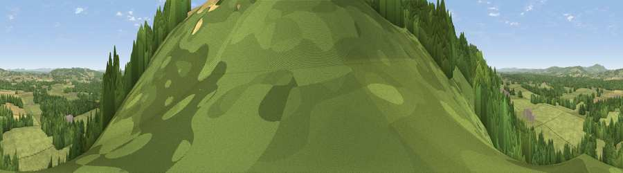

Dunction Hill
#24890 in England · top 47% of its area beats it · near DunctonThe view, rendered

A 360° render of this exact spot computed from the terrain model, tree cover and land cover — summer colours, afternoon light, calibrated against photographs of famous viewpoints. Real trees, hedges and buildings will differ in detail.
The panorama
Grey silhouette: terrain skyline in each direction (720 bearings, Earth curvature and refraction included). Dashed green: skyline with trees (+15 m) and buildings (+8 m) as obstacles. Blue strip: how far the ground is visible on each bearing.
Where the view opens
Wedge length = distance to the farthest visible ground on that bearing (vegetation-aware). Rings at 10, 25 and 50 km.
What fills the view
53% woodland · 43% grassland · 4% cropland ·
Angular shares of the visible panorama (visual magnitude), not map area. Landscape diversity 0.38 (0–1 Shannon).
Key numbers
More beautiful places nearby
The staircase of upgrades: each row has a higher view potential than everything closer. Driving times are estimates from straight-line distance, calibrated against real road routing — check an actual route before setting out.
| Place | Direction | Drive | Score |
|---|---|---|---|
| Viewpoint near Duncton | SW · 1 km | ~2 min | 70.2 |
| Barlavington Down | SE · 1 km | ~3 min | 77.3 |
| Viewpoint near Bignor | S · 3 km | ~8 min | 82.1 |
| Glatting Beacon | SSE · 3 km | ~8 min | 84.3 |
| Bignor Hill | SE · 4 km | ~9 min | 84.4 |
| Linch Down | W · 11 km | ~20 min | 85.2 |
| Beacon Hill | W · 15 km | ~27 min | 85.8 |
| Chanctonbury Ring | ESE · 19 km | ~32 min | 87.0 |
50.93644, -0.64246 · source: osm viewpoint · position refined by local search. Computed location — check access rights before visiting.